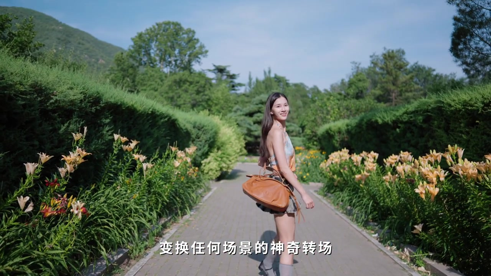
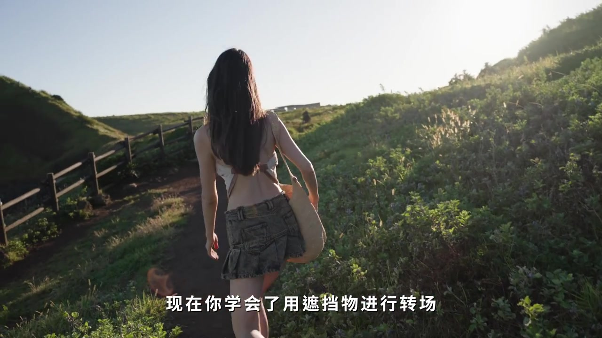
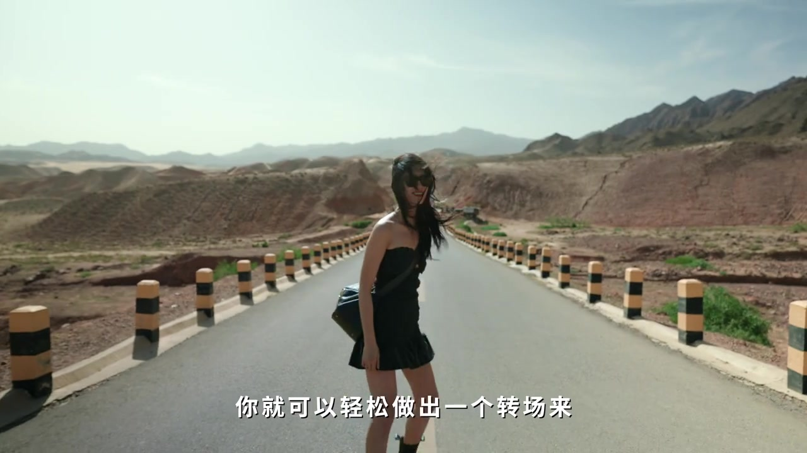
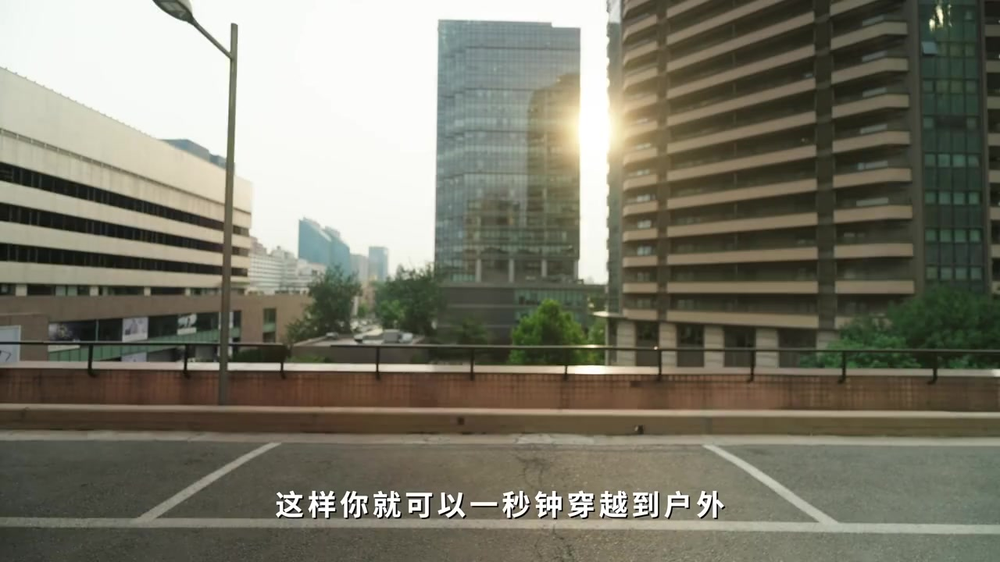
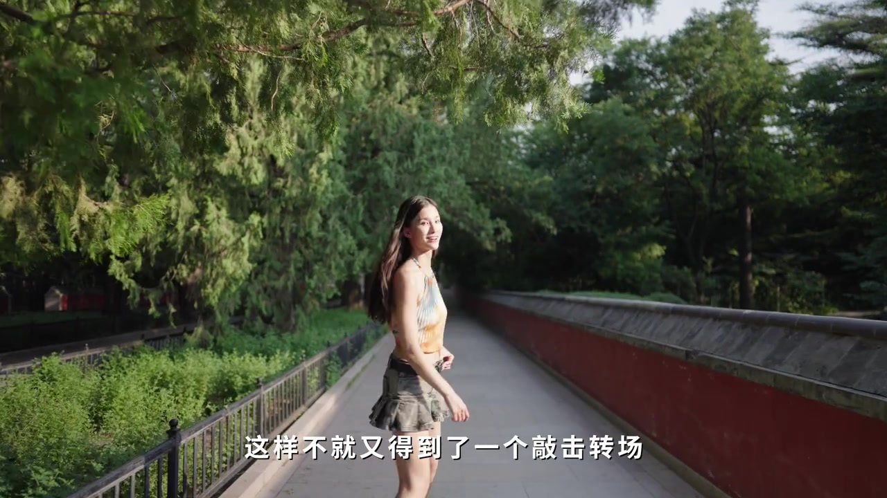

开场 · 00:00
擦身而过，场景直接换掉
视频第一秒，女生抱着档案袋从红砖墙前走过；下一秒，她已站在花径上回头笑。字幕把这招叫作「可以在擦身而过时变换任何场景的神奇转场」——Whisper 把「神奇转场」听成了「神器专场」。
作者紧接着抛出好奇：就连拍友都在想，它是怎么做到如此丝滑的？秘诀被点破：在用身体挡住镜头的一瞬间切换画面。
叙述按画面字幕理解；页末转录保留 Whisper 原文（如「专场」「与用」「拍摄」等误识）。


遮挡物 · 00:08
恭喜你：遮挡物就是底层逻辑
作者宣布「恭喜你」，画面字幕写成「现在你学会了用遮挡物进行转场」。他强调遮挡物有多重要：随便找个东西遮一下，就能轻松做出转场——到这里，所谓「转场的底层逻辑」被说成已经完全搞懂。


自己造遮挡 · 00:19
没有遮挡物？你就是遮挡物
镜头回到窄巷里说话的男生（黑 T、New Balance logo）。他自问：身边没有合适遮挡物怎么办？答案是「自己造一个遮挡」——在必要的时候，你就是遮挡物本身。随后画面切到室内双人对谈，字幕写「就是自己造一个遮挡物」。
电梯与手臂 · 00:26
手机贴电梯门，手指再打开
示范 shot 1：女生在电梯里把手机贴在关闭的金属门缝上（屏幕发绿光），下一画面用手指模仿电梯打开的样子，于是「一秒钟穿越到户外」。Whisper 把「穿越到户外」听成了「穿一袋户外」。
另一招：直接用手臂做一次遮挡，从「下班」状态跳到想去的旅行地。


敲击转场 · 00:36
铃声一响，敲击也能转场
作者忽然说「等一下」，画面出现铃声提示（Whisper 听成「林声音」）。他演示敲一下：字幕写「这样不就又得到了一个敲击转场」——把声音触发和遮挡/切点绑在一起。

甩镜头 · 00:41
不用遮挡物：甩镜头也能接
下一步反问：不用遮挡物还能拍转场吗？当然可以——用运镜。甩镜头被说成「真的巨简单」：第一个片段结尾把镜头甩向一边；拍下一段时从相同方向继续运镜，再剪在一起。Whisper 把「相同」听成「相农」，「剪在一起」听成「检来起」。
向后运镜 · 00:55
向后拉的同时，让人走进来
更简单的一招：向后运镜时让人物走进画面，在他回头看你的瞬间切到下一场，再继续向前走。字幕写「继续向前走就可以了」（Whisper：「走着开」）。

共同点 · 01:03
靠「骗」大脑：画面要有联系感
结尾回到室内讲解。作者说他一直在想：明明是不同场的两个画面，怎么做到完美衔接？答案是「靠骗」——只要画面稍微有点联系感，大脑就会不自觉脑补接下来的内容，于是觉得无比丝滑。
因此只需抓住画面之间的共同点：相似动作、相似物体，甚至同一种运镜，都可以丝滑转场。片尾黄字标题：「关于转场的秘密你都知道了」。
看完这一分钟
从擦身遮挡到自己造遮挡、电梯手机、手臂、敲击，再到甩镜与回头切场，最后落到「共同点骗大脑」。标题写「10 种」，视频实际是在同一底层逻辑上展开多层可复用招式——页末转录保留全部 64 段 Whisper 原文供对照。